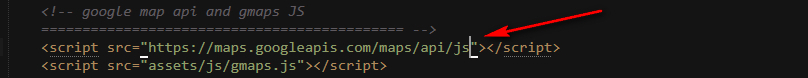
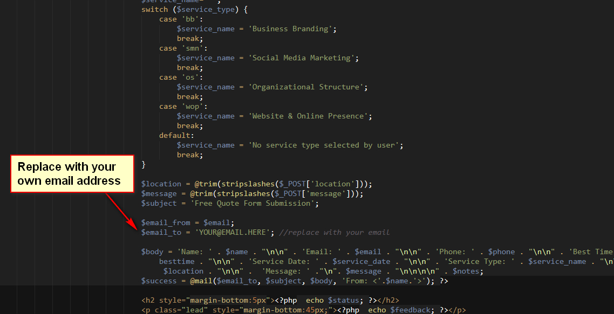

Ionize
Responsive Multipurpose Corporate Bootstrap Theme
- Created: 3rd Jan, 2018
- Latest update: 3rd Jan, 2018
- by: ThemeItems
- Author: Md Aktaruzzaman
- email: support@themeitems.com
Ionize is a creative Responsive Multipurpose Corporate Bootstrap Theme built with Bootstrap version 3.3.7 and SASS. This template can be used for any small to medium sized corporate company/agency or individulas to build and publish their online profiles, services and branding. This template comes with developer/non developer friendly coding styles as well as it has rich customization capabilities that is suitable for any kind of small business or creative farms. Creative design, stunning animations, eye catching google map and functional contact form are the main features of this template.
We hope, you will be pleased with this mobile friendly template and for any clarification please visit the demo and carefully read this documentation. This document will assist you to have a better idea about this tamplate's structure and functionalities. Though we tried to cover every single details regarding this template, however, for any issue, that is not coverd here, please feel free to communicate us via email.
Click here to visit the online documentation for this template
Template Structure
After downloading the file from themeforest, you will find your template inside the "html" folder
This folder has below structure
- assets (folder) contains all the supporting assets including stylesheets/JS files/images/fonts etc that are used in this template. Child folders are
- _scss This template is built using SASS. All of the sass files are present in this folder. Please visit this section to have a details idea if you want to customize the SASS files
- css This folder contains all the CSS files that has been generated dynamically using the SASS files. You will find 6 CSS files here. Each CSS file serves as one skin/theme for this template. Among these CSS files, only one CSS files is being used by the template for each skin/theme.
For example, main.css is the default skin/theme, main-flat.css is the skin for "Flat" color skin and so on.
In other words, if you need to use any specific color skin, just use the css file for that specific skin.M
You will find some files that have .map extension. These files are really not necessary to show your site in front end, but keep these files as it it because its a good choice for developers to identify/locate the origin of the CSS of an specific element. - fonts contains fonts (font-awesome/glyphicons/flaticons)
- img contains images used in the template
- in this folder you can see, there are sub-folders like "about", "portfolio", "blog" and so on. These name matches the section id name in index.html
- Each folder contains images for respective section. For example, "About" folder contains the images that used in the "About" section in the template
- js Contains all the javascripts used in the template
- videos This folder contains the videos used on home version 2 showcase section background
- about.html
- blog-grid.html
- blog-list-left-sidebar.html
- blog-list-no-sidebar.html
- blog-list-right-sidebar.html
- contact-us-01.html
- contact-us-02.html
- faq.html
- index.html
- index-02.html
- index-03.html
- index-04.html
- portfolio.html
- portfolio-single-01.html
- portfolio-single-02.html
- sendemail.php Responsible for processing "Contact Us" form on Contact Page
- sendquote.php Responsible for processing "GET A FREE QUOTE" form on Home version 2
- services.html
- single-post-left-sidebar.html
- single-post-no-sidebar.html
- single-post-right-sidebar.html
Copy all of theses files and upload those in your domain's root directory and the site is live!
**Note: Images used on the demo is not included in the template you downloaded, rather you will see preview images with the image dimension mentioned in the template. You can always replace those images. For somooth layout, use images with specified dimension and also please compare with the demo to have a better idea
Once you placed all these files and your site is live, you will find a color/skin switcher icon at the left edge/side of your site. Click this icon and you can see there are 6 predefined color scheme/skin/theme present for your site. To disable/remove color skins/themes/schemes, visit here
Fonts used:
- Google font - Open Sans - Used for body text font
- Google font - PT Sans - Used for Heading/Title font
Colors used:
- Default Skin:
- Primary Color: #1ca5b8
- Secondary Color: #ff646c
- Tertiary Color: #0b4249
- Offset Color: #f3f3f3
- Body Font Color: #333
- Border Color: #ccc
- Florence Skin:
- Primary Color: #919190
- Secondary Color: #25BEA0
- Tertiary Color: #43423E
- Offset Color: #f3f3f3
- Body Font Color: #454545
- Border Color: #aaa
- Rose Skin:
- Primary Color: #798F9D
- Secondary Color: #FF7374
- Tertiary Color: #142B43
- Offset Color: #f3f3f3
- Body Font Color: #545454
- Border Color: #ccc
- Antonio Skin:
- Primary Color: #2494e0
- Secondary Color: #fe7a4a
- Tertiary Color: #0c3e73
- Offset Color: #f7f7f7
- Body Font Color: #545454
- Border Color: #ccc
- Radcliffe Skin:
- Primary Color: #775BA3
- Secondary Color: #F98A5F
- Tertiary Color: #442D65
- Offset Color: #f7f7f7
- Body Font Color: #666
- Border Color: #ccc
- Periwinkle Skin:
- Primary Color: #29658A
- Secondary Color: #2D9CCA
- Tertiary Color: #25274D
- Offset Color: #f7f7f7
- Body Font Color: #4E4A41
- Border Color: #ccc
Javascripts used: You will find all necessary JS files at the bottom of every page's source code. Please note that, as this template contains multiple pages, so we have only enqueued the JS files that is necessray to run that specific page. Some of the pages have JS files that is spefic for that page only, which you will find on the source code (at the very bottom) of those pages. Here is combined list of all JS files that has been used throughout all pages of this template

Editing the template
Open the page template you want to edit with any text editor like notepad++ or sublime text and you will have the access to the codes immediately. Now please follow below sections or choose from the left side menu to edit specific sections.
Modification of SASS Files
You will find all SASS files (have an extension of .scss) inside assets/_scss folder

Please note that, you should have some knowledge regarding SASS to modify these sass files. If you are not familiar with SASS files, please skip these section. Theses files are only for developers
You will be needed a SASS proprocessor applications (for example Prepros, Codekit etc.) to complie the SCSS files and generatong the CSS files dynamically.
As you can See there are 6 folders and one "style.scss" file. Each folder have different SASS files.
- All SASS variables are present inside "abstract/_variable.scss" file
- All color scheme/skins are present inside "themes" folder.Each file on theme folder is overriding the variables that is present on "abstract/_variable.scss" file, thus generating different skins/themes/schemes.
- All HTML components stylings are present inside "components" folder
- All HTML layouts stylings are present inside "layouts" folder
- Files under "themes" directory will be compiled to the "assets/css/main-{respective-file-name}.css" file.
- "style.scss" file will be compiled to "assets/css/main.css" file
Modification of CSS Files
If you are not familiar with SASS, and want to modify the styles using CSS only, please follow below procedure: (It is strongly recommended not to modify any existing css files as those are generated dynamically using SASS)
- 1. Create a new file named "modifications.css" and keep it inside "assets/css" folder
- 2. Enqueue this newly created CSS files just below the "Master Stylesheet" that is present at header
- 3. Place your new css code in the "modifications.css" file

Important/helper CSS classes:
- Margin related CSS
.mb0- margin-bottom: 0.mt0- margin-top: 0.mt-full- margin-top: {section-height}.mb-full- margin-bottom: {section-height}.mt-half- margin-top: 0.5*{section-height}.mb-half- margin-bottom: 0.5*{section-height}.vmargin- margin-top: {section-height}; margin-bottom: {section-height}.nomargin- margin-bottom: 0;- Padding Related CSS
.pb0- padding-bottom: 0.pt0- padding-top: 0.pb-full- padding-bottom: {section-height}.pt-full- padding-top: {section-height}.pb-half- padding-bottom: 0.5*{section-height}.pt-half- padding-top: 0.5*{section-height}.vpadding- padding-top: {section-height}; padding-bottom: {section-height}.no-padding- padding:0;- Background Color Related CSS
.bgc-primary- background-color: {primary-color}.bgc-secondary- background-color: {secondary-color}.bgc-tertiary- background-color: {tertiary-color}.bgc-transparent- background-color: transparent.bgc-offset- background-color: {offset-color}.bgc-white- background-color: #fff- Text Color Related CSS
.color-primary- color: {primary-color}.color-secondary- color: {secondary-color}.color-tertiary- color: {tertiary-color}.color-offset- color: {offset-color}.color-white- color: #fff
NB: {section-height} refres to the height of section spacing, for example 90px for Default Skin
Header Section
This section introduces an intelligent and smart header which detects mouse scrolling to show header contents. Also this section contains the Top Bar, Logo and Main Navigation Menu when user first visit the site. Note that header top bar is not included in Homepage version 2,3 and 4.

How to change header top bar?
You need to search inside <header> tag and find the code block that is wrapped with a <div> like this: <div class="header-top">. Top bar contains social and contact information. You can change/alter the these texts and links there.
How to change the Logo?
You need to search inside <header> tag and find the code block that is wrapped with a <div> like this: <div class="logo"> and inside that you will find an <img> tag with a source. You need to change the source by your own logo source demonstrated below:
<a href="index.html"><img src="your-logo.png" alt="Logo"></a>
How to change the Main Navigation Menu Text?
You need to search inside <header> tag and find the code block that is wrapped with an <ul> like this: <ul class="sf-menu">. You can change/alter the menu text and links there.
How to change the Mobile Navigation Menu Text?
Mobile navigation menu is not inside <header> tag. You can find it just after the start of body tag and it is wrapped with an <div> like this: <div class="mobile-menu">. You can change/alter the menu text and links there.
Slider/Showcase Section
This template uses the following sliders/showcase section to showcase your products/company information.
Owl Slider (Homepage 01)
You can find the code block contains Owl Slider in index.html just after the end tag of <header> wrapped around like this: <div class="primary-slider owl-carousel">.
How to change the Owl Slider images and texts?
In the code block you can will see three <div> wrapper with class slide-single and inside each <div> there is an <img> tag. You can change the <img> src with your own images. Note that your images should have 1920x1080 dimension to match with the template.
Also there is a code block wrapped with <div class="slider-content"> in each slide-single wrapper. You can replace the heading and the texts with your own texts.
Where to customize the JS for Owl Slider?
To customize the Owl Slider JS, you need to go the end of index.html and find the <script> tag containing the javascript for Owl Slider, demonstrated below:
Video Showcase (Homepage 02)
You can find the code block contains Video Showcase in index-02.html inside <header> tag wrapped around like this: <div class="showcase-text">.
How to change the Video?
To change the video, you need to go the end of index-02.html and find the <script> tag containing the javascript for video source, demonstrated below:
Replace all three source such as webm, mp4, ogg with your own relevant video URL and change the poster with the relevant video image. Before changing the Video URL please check the video format to match with the Javascript.
Hero Showcase (Homepage 03)
You can find the code block contains Hero Showcase in index-03.html inside <header> tag wrapped around like this: <div class="showcase-text">.
How to change the Image Background?
Go to assets/img/slider/home-3 folder in the template and there you will find "slide-1.jpg" image (image dimension 1920X1080). Replace this image but keep the image name and dimension same and you are done!
Backstretch Slider (Homepage 04)
You can find the code block contains Backstretch Slider in index-03.html inside <header> tag wrapped around like this: <div class="showcase-text">.
How to change the Backstretch Slider Background Image?
To change the Backstretch Slider Background Image, you need to go the end of index-04.html and find the <script> tag containing the javascript for Backstretch Slider, there you will see the image sources which is demonstrated below:
Then replace the image sources with your own image URL.
Modification of Portfolio section (Isotope)
The portfolio section is built using ISOTOPE jquery library and ImagesLoaded jquery library
The HTML part should be like below screenshot
You will find the jquery responsible for filtering the portfolio on main.js file (inside assets/js folder)
The "popup" functionality is provided using photoswipe javascript library.
The Photoswipe HTML markup is present at the very bottom of each page where Portfolio image POP UP is used
Customizing Google Map
Both Contact Us page uses a eye catching google map to display map location. To change the map location, you need to open the "contact-us-01.html" or "contact-us-02.html" file and go to the end of the file where a <script> tag is opened to represent the javascript for map with a comment JS specific to this page only. Here find two pair of lat, lng and provide your own latitude and longitude there. lat=latitude and lng=longitude. The first lat/lng pair is for centering map location and the other lat/lng pair is for the map marker. If you need to change the URL for the map marker, please check the variable named image and change the image URL.

**Note: To use the map, as per google you need to use your own API Key and you can get this from here https://console.developers.google.com/. Also here is the supporting doc how to obatin the API key API Key
A sample API key looks like AIzaSyA6CKatrt34QhZKT5TyHqwerxM3hEiMpQ.
After getting your own the API key:
<script> tag containing comment google map api and gmaps JS and just copy and paste that API key at the last of this line like below screen shot:
Before:
After:

Disabling Header Top Bar
Most of the pages of this template uses a header top bar to show contact and social information. If you need to disable the "Top bar" for header, you need to open all the files containing the top bar HTML markup (except for index-02.html, index-03.html and index-04.html because these pages do not contain header top bar),
find the wrapper <div> tag <div class="header-top"> and the end tag </div> <!-- end of header-top --> and delete the entire block.
The code block is located under <div id="o-wrapper" class="o-wrapper"> wrapper. A sample screenshot of the code block is given below:

Changing/disabling Page Loader
The template uses a nice page loader animation that runs while the elements and the scripts of the page is being loaded.
If you need to change/disable the page loader, you need to go to the end of every file and find the code block that starts with a comment of <!-- Site Loader started--> followed by a wrapper <div> <div class="cx-pageloader">. The code block can be found after the ending tag of <footer>. A sample screenshot of the code block is given below:
- Disabling Page Loader: If you need to disable the page loader, you need to delete the entire code block to disable the page loader.
- Changing Page Loader: Or if you need to change the page loader, you need to replace the HTML markup inside the wrapper tag contains the class
cx-pageloader, keeping the wrapper tag/class intact as this wrapper class uses javascript for a fade out transition animation.
Disabling Scroll to Top
The template uses a Scroll to top button located at bottom right corner of every page.
If you need to disable the scroll to top button, you need to go to the end of every file and find the code block inside of <div class="copyright-section"> before the ending tag of <footer>. The code block contains an ID of "toTop". A sample screenshot of the code block is given below:
Deleting the code block will disable the scroll to top button.
Disabling Color Switcher
The template uses a Color Switcher located at left center position of every page. This Color Switcher swaps the colors with the help of six predefined skins used in the template.
If you need to disable the Color Switcher, you need to go to the end of every file and find the code block containing the Color Switcher HTML markup,
find the code block that starts with a comment of <!-- Theme Switcher HTML code started --> followed by a wrapper <div> <div id="colorPanel" class="colorPanel">. A sample screenshot of the block is given below:
Deleting the code block will disable the Color Switcher.
Copy/paste Elements
How to copy element from one page to another?
This template is designed and coded in such a way that you can copy/paste any of your desired section from one page to another without any kind of CSS modification/import.
If you need to copy any sections from one page to another, you just need to copy the whole HTML markup from that file and paste it in the desired file. Just make sure that the section has no javascript dependancy. If the section has any javascript library dependancies then the <script> tags containing the all the required javascript also need to be copied over to the destination file.
Contact Form & Quote Form Customization
How to get the messages to your own email address when user submit the Contact Form:
Open the "sendmail.php" file provided with the template and replace the email address within the quotation mark there as per below screenshot:
How to get the messages to your own email address when user submit the Quote Form:
Open the "sendquote.php" file provided with the template and replace the email address within the quotation mark there as per below screenshot:
Icons Used in this template
We have used FontAwesome and Flaticons in diffrent section of this HTML templates
You can find Fontawesome documentation/icon details from their official website. For Flaticons that we used in this template, please open the folder /assets/fonts/flaticon/flaticon.html and open the file in a browser, and you will get all the flaticons html markup there. You can use any icon as you want
The HTML markup will be like this
<i class="fi flaticon-pie-chart" aria-hidden="true"></i>
where 'flaticon-pie-chart' is the icon name
If you want to use the icons as a CSS before/after element, please open the file "assets/fonts/flaticon/flaticon.css" file in a file editor like notepad++ or sublime text and you will get all the CSS entity for the required icons.

An example:
.faq-wrapper .panel-default .panel-heading a::before {
content: "\f117";
font-family: Flaticon;
position: absolute;
left: 10px;
font-size: 15px;
top: auto;
}
where "\f117" is the css entity of flaticon-price-tag icon
Credit
Javascript
- jquery.1.12.4.min.js - Javascript library
- bootstrap.min.js - Twitter boostrap framework
- jquery.isotope.min.js - An exquisite jQuery plugin for magical layouts
- imagesloaded.js - Detect when images have been loaded.
- jquery.counterup.min.js-Countdown Plugins
- gmaps.js - Google Maps API
- jquery.easing.1.3.js - A jQuery plugin from GSGD to give advanced easing options.
- owl.carousel.js - Responsive carousel slider
- waypoints.js - Triggering function when scrolling
- hoverIntent.js - jQuery's hover method
- jquery.backstretch.min.js - Add a dynamically-resized, slideshow-capable background image
- jquery.colorpanel.js - Simple jQuery plugin to switch css stylesheet skin theme on your template demo
- jquery.cookie.js - Simple jQuery Cookie plugin
- jquery.fs.wallpaper.min.js - A jQuery plugin for smooth-scaling, element-filling backgrounds.
- jquery.mobile.customized.min.js - Custom jQuery bundle for mobile optimization
- headroom.min.js - jQuery scroll to hide the Nav Menu plugin
- menu.js - JQuery Plugin for Mobile Menu
- modernizr-2.8.3.min.js - JQuery modernizr for cross browser support detecting
- photoswipe.min.js - JQuery popup plugin
- photoswipe-main.js - Photoswipe Custom support
- slick.min.js - Responsive carousel slider
- superfish.min.js - Navigation Menu Plugin
- main.js - Contains all custom script
Icons
- Flaticon - Best icon Pack
- Font Awesome - Best Icon Font
Images and Videos Credit
- Unsplash - Ohotos for everyone
- Story Blocks - Royalty Free Stock Images
- Pexels Videos - Completely Free Stock Videos
Thank You
Finally thank you very much for purchasing this HTML template. Please keep that in mind that we are working very hard to providing better quality in coming days. If you love your work then appreciate us by writting a good review with 5 star.